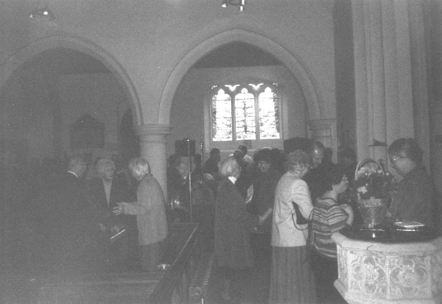

Case Study: A Church shewing forth REAL RELIGION.S.S. Peter & Paul, Nutfield, Surrey.Sunday 30th October 2005 may not stand in the minds of many as being a particularly significant day – but significant it was. For on this day the Rector of Nutfield, Rev. Graham Ivor Williams retired from that Parish. Nothing unusual in that, you might think. But Rev. Williams had ministered to his flock for 50 YEARS! Instituted on 18th October 1955, and retiring on 30th October 2005, the Rev. Gentleman and going in and out amongst his flock for 50 years, this is a truly remarkable achievement, and the greatest honour is due to him, not only for serving in a truly Godly way for this time, but for leaving the finances of the Parish, and the fabric of the building in such a wonderful state. If all Church of England Ministers did as Rev. Williams has done, then the Established Church would be thriving. But even Rev. Williams fine example was subject to criticism from some of the CofE hierarchy in their typical syncretist bullying way, and the Rev Gentleman has “run the straight race through God’s good grace”, and all those of us who worship with the real religion enshrined in the Prayer Book and 39 Articles must thank God heartily for his goodness in presenting Rev. Williams to the Church of Nutfield, and in allowing him the health to serve for such a long period. It is impossible to see how anyone could serve for such a great period of time under the current barmy CofE rules, so this is likely to be a record length of service for a Church of England Minister, at least in the CofE as we now know it. It is worth thinking, just briefly, how the world has changed beyond recognition during Rev. Williams 50 years at Nutfield. In 1955 all the current perversions of Society could hardly be imagined, let alone practised. The Church of England was still many years away from the cretinous decision to form Synods, rather than keeping the Convocations under which the CofE fared much better. And of course we can list many of the stupidities that have arisen because of Synod – retiring clergy at 70, leaving a huge Clergy Pensions timebomb which is currently draining the Church of much of its wealth, the outrageous Synod vote to permit women to become ‘Priests’ and the crazy continual vandalism to our liturgy and church buildings in equal measure (destroying our liturgy and giving us the trash of Common (Comic) Worship and attempting to rip out perfectly good pews (as at Ashford, Kent). Isn’t it amazing, dear reader, how they can all plead poverty until they want to buy a curate a ¼ million pound house (as at Ashford, Kent) or spend a fortune on re-ordering a Church when it suits there agenda of sweeping away our glorious heritage, without a care for real religion and the doctrines expressed by the Creeds, Ten Commandments and XXXIX Articles? Anyway, we record below a peal rung for the London County Association by 5 of our regular and Traditionalist ringers, and record our grateful thanks to Rachel Billinge of Kensington for ringing with us so that we might pay our great respects to a truly great man, Rev. Graham Ivor Williams. LONDON COUNTY ASSOCIATION
Saturday
15th October 2005 S.S.
Peter & Paul, Nutfield 5040 Plain Bob Minor (Comp. A.J.W. Tibbets) (9) Treble Robin J. Hickmott* 2 Rachel C. Billinge 3 Simon J. O. Head 4 Christopher J. Cooper 5 William J. Stungo Tenor Graham R. Hayward (c) * First Peal. Rung immediately following a farewell party held for the Rector, who was Instituted as Incumbent of this Parish 18th October 1955, and who will take his last service here (Matins) on 30th Oct 2005. Also rung to celebrate the Bicentenary of the Battle of Trafalgar. Following the Rector's final service:  |